这篇文章上次修改于 918 天前，可能其部分内容已经发生变化，如有疑问可询问作者。
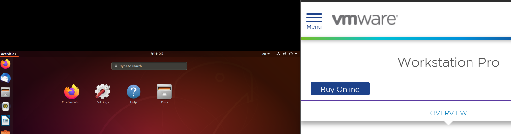
虽然 Windows 10 自带有 WSL，可以安装 Linux 系统，但是在实际使用中发现还是有很多限制的。所以想要完整的 Linux 系统，还是安装了虚拟机。
WSL 开启参考：https://blog.niekun.net/archives/1148.html
我使用的是 VMware workstation 安装了 Ubuntu 18.04 LTS。安装过程中与遇到了一些问题，需要特别的进行处理，在此做一下记录。
VMware workstation & Ubuntu
官网下载 VMware workstation，需要购买序列号：https://my.vmware.com/en/web/vmware/info/slug/desktop_end_user_computing/vmware_workstation_pro/15_0
下载完成后进行安装，然后根据提示重启及输入序列号。
Ubuntu 18.04 LTS 镜像下载：http://releases.ubuntu.com/18.04.4/ubuntu-18.04.4-desktop-amd64.iso
镜像下载完成后就可以开始准备安装虚拟机了，点击 文件 - 新建虚拟机：
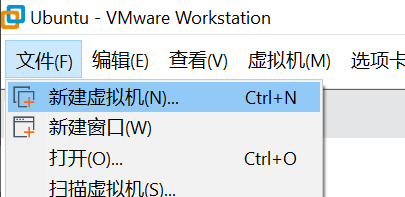
选择 典型 安装，然后下一步，点击浏览找到 Ubuntu 镜像文件：
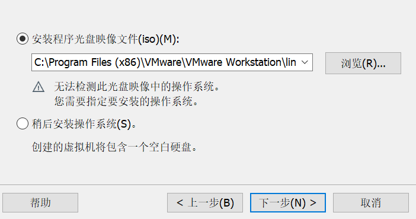
下面就根据提示设置虚拟机账户密码等信息，完成安装后会自动启动虚拟机，使用刚才设置的用户名密码登录虚拟机。
分辨率设置
光标退出虚拟机的快捷键是：ctrl alt。
我的主机显示比例是 16:9 的1920 × 1080，开机后显示比例是 16:10 的，所以需要设置下全屏。
首先点击保持纵横比拉伸来让显示尽量铺满全屏：
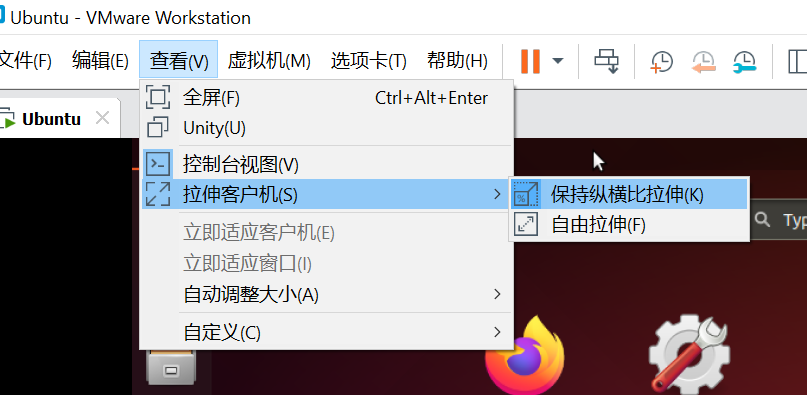
进入 Ubuntu，点击右下角扩展键：
搜索 displays，然后进入显示设置：
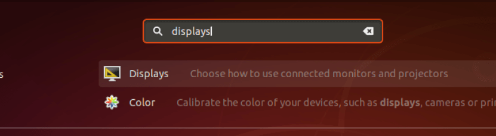
选择一个和主机一样比例的分辨率：
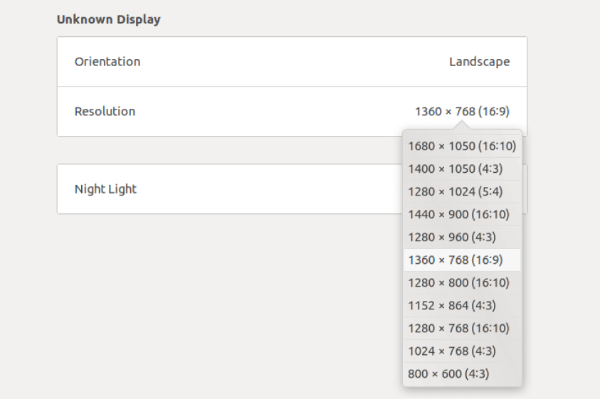
这样虚拟机就可以全屏了。
VMware tools
VMware tools 可以让主机和虚拟机实现数据交互，很多功能依赖于 VMware tools，如：共享文件夹，网络桥接，共享剪贴板等。
但是我在安装虚拟机后，VMware tools 安装项是灰色的：
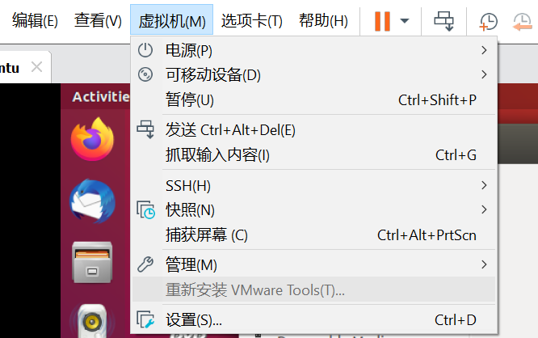
查询后了解到 Linux 的 tools 需要手动安装，官网对 Linux 虚拟机安装 VMware tools 有一篇教程：https://www.vmware.com/support/ws5/doc/ws_newguest_tools_linux.html
VMware 安装的时候在安装目录下会有一个 linux.iso 文件，这就是 VMware tools 安装镜像，我的路径是：C:\Program Files (x86)\VMware\VMware Workstation\linux.iso
首先在虚拟机设置里添加一个新的 cd/dvd，挂载 VMware 安装目录下的 linux.iso 镜像：
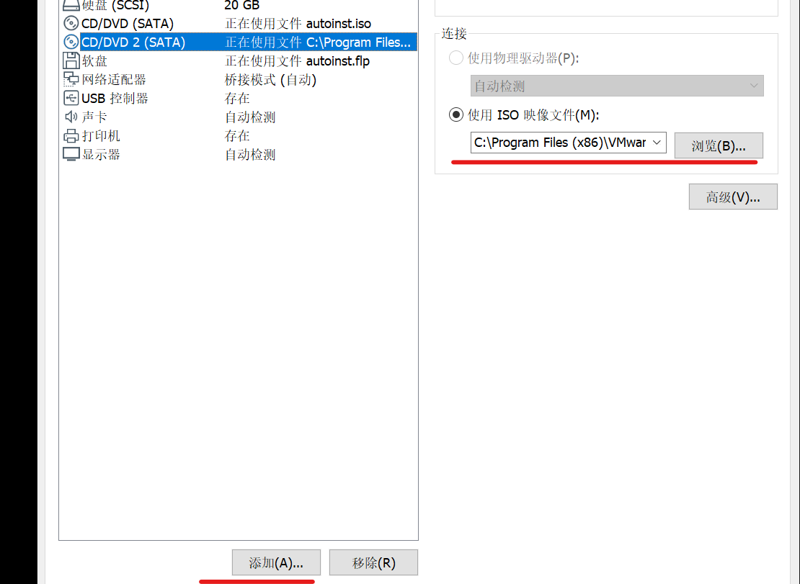
进入 Ubuntu，桌面会有 VMware tools，终端路径是：/media/USERNAME/VMware Tools：
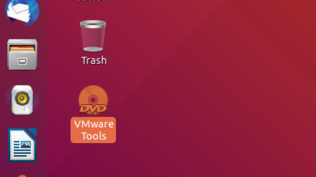
进入 VMware Tools 目录，里面有一个压缩包：VMwareTools-10.3.10-13959562.tar.gz，执行如下命令：
cd /tmp
tar xvf '/media/USERNAME/VMware Tools/VMwareTools-10.3.10-13959562.tar.gz'
cd vmware-tools-distrib
sudo ./vmware-install.pl执行解压目录下的 vmware-install.pl，一路 enter 即可。执行结束后就完成了 VMware Tools 的安装，重启系统。
网络设置
在虚拟机设置里将网络连接设置为桥接模式，这样虚拟机和主机就在一个 IP 网段内，如果不设置为桥接模式，虚拟机内可能无法执行一些网络命令，如：mtr：
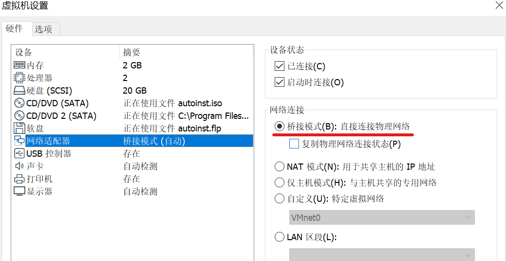
设置完成后重启虚拟机，主机使用命令 ipconfig 查看当前 IP：
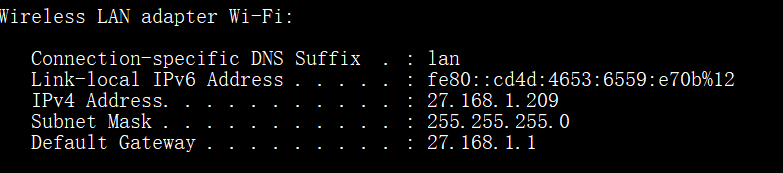
虚拟机使用命令 ifconfig 查看当前 IP：
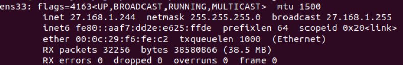
两个 IP 在一个网段内则设置成功。
共享文件夹
根据需要可以设置共享主机文件夹，在虚拟机内可以访问，共享文件夹路径是：/mnt/hgfs：
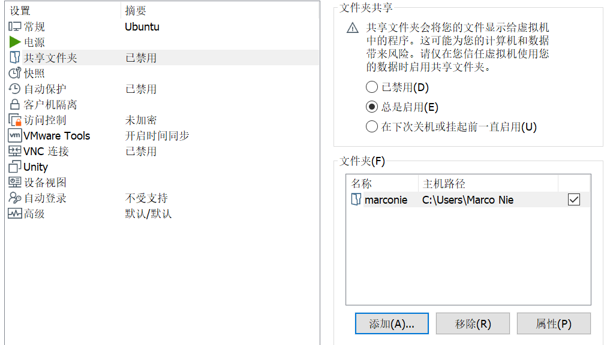
在虚拟机终端测试访问：
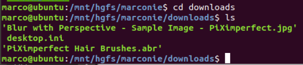
共享主机代理
如果主机设置了代理，虚拟机可以直接共享此代理设置。
首先设置主机代理端口开放给局域网，如果是显示只监听本地地址则 listen 地址设置为 127.0.0.1，如果开放监听局域网地址，则 listen 地址设置为 0.0.0.0 即可。
在主机使用命令 ipconfig 查看主机 IP 地址。如果要在虚拟机设置系统代理，在虚拟机 Ubuntu 设置里搜索 proxy，点击 network proxy 手动设置代理地址：
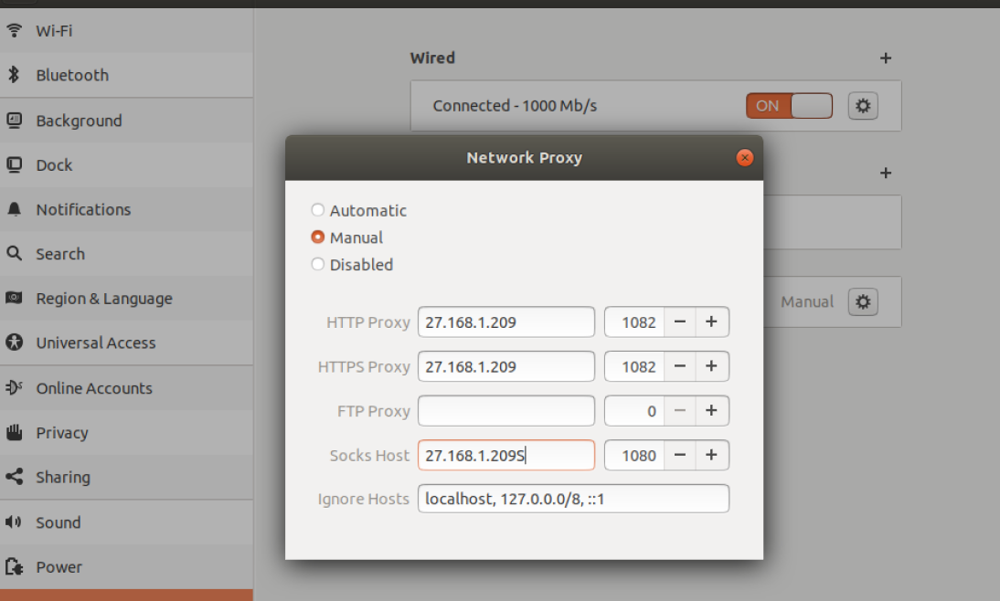
如果不想设置系统代理，也可以根据上面的主机地址和端口，在单独的应用程序里设置代理，如浏览器。
终端代理设置参考我之前的文章，也是使用上面得到的主机 IP 和代理端口：https://blog.niekun.net/archives/97.html
以上就是我用 VMware workstation 安装 Ubuntu 的过程。
没有评论